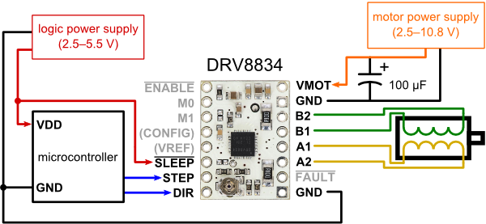
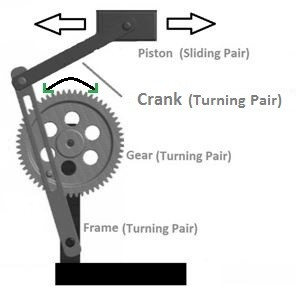

Mustafa Omran: Machine Building and End Factors
<h5>Stepper Motors...The motor you see almost everywhere. From 3D printers to even vending machines, they're everywhere! And not for bad reason. They have excellent position accuracy, high holding torque and are available in multiple sizes. For this week's assignment, students had to make a machine that utilizes a stepper motor.</h5>
<br><hr style="border-top: dotted 5px;"><br>
<h5>I have seen stepper motors multiple times in my life but didn't actually know what they were used for. To start, I experimented with a low voltage <a href="https://www.pololu.com/product/2134" style="color: #0645AD" target="_blank">DRV8834</a> board. following this circuit</h5>

<h3>Code</h3>
<pre><code class="arduino">
const int stepPin = 13;
const int dirPin = 12;
void setup() {
pinMode(stepPin, OUTPUT);
pinMode(dirPin, OUTPUT);
digitalWrite(dirPin, LOW);
}
void loop() {
digitalWrite(stepPin, LOW);
delay(50);
digitalWrite(stepPin, HIGH);
delay(50);
}
</code></pre>
<h6>*Code provided by <a style="color: #0645AD" target="_blank" href="https://www.seas.harvard.edu/node/2034">Nathan Melenbrink</a></h6>
<h4>My circuit looked like this</h4>
<br><h5>And ran like this</h5>
<video width="400" controls muted>
<source src="../images/MachineBuilding/IMG_0184.MOV.mp4" type="video/mp4">
</video>
<h5>I followed by uploading this code to make the stepper motor accelerate</h5>
<pre><code class="arduino">
include AccelStepper.h>
const int stepPin = 13; // blue
const int dirPin = 12; // orange
// Define a stepper and the pins it will use
AccelStepper stepper(1, stepPin, dirPin); // initialise accelstepper for a two wire board
void setup()
{
}
void loop()
{
if (stepper.distanceToGo() == 0)
{
// Random change to speed, position and acceleration
// Make sure we dont get 0 speed or accelerations
delay(1000);
stepper.moveTo(rand() % 1000);
stepper.setMaxSpeed((rand() % 1000) + 1);
stepper.setAcceleration((rand() % 1000) + 1);
}
stepper.run();
}
</code></pre>
<h6>*Code provided by <a style="color: #0645AD" target="_blank" href="https://www.seas.harvard.edu/node/2034">Nathan Melenbrink</a></h6>
<br><h5>To make this</h5>
<video width="400" controls muted>
<source src="../images/MachineBuilding/IMG_0185.MOV.mp4" type="video/mp4">
</video>
<br><br><hr style="border-top: dotted 5px;"><br>
<h5>Tying onto last week's IoT unit theme of home security, I decided to make a linear actuator that would serve as a door lock deadbolt. I reaserched different ways of converting the stepper motor's rotational motion into linear motion and stumbled upon a numerous amount of mechanisms.</h5>
<h6>- <a style="color: #0645AD" target="_blank" href="https://en.wikipedia.org/wiki/Slider-crank_linkage">Slider Crank mechanisms</a></h6><img src="../images/MachineBuilding/slidercrank.gif" width="100" alt="">
<h6>- <a style="color: #0645AD" target="_blank" href="https://en.wikipedia.org/wiki/Scotch_yoke#:~:text=The%20Scotch%20Yoke%20(also%20known,pin%20on%20the%20rotating%20part.">Scotch Yoke Mechanism</a></h6><img src="../images/MachineBuilding/scotchyoke.gif" width="100" alt="">
<h6>- <a style="color: #0645AD" target="_blank" href="https://mechanicalbasics.com/crank-and-slotted-lever-mechanism-its-working/#:~:text=Crank%20and%20Slotted%20Lever%20Mechanism%20is%20also%20called%20Crank%20and,which%20sourced%20by%20Electrical%20Motor.">Crank and Slotted Lever Mechanism</a></h6>
<h6>- <a style="color: #0645AD" target="_blank" href="https://en.wikipedia.org/wiki/Cam">Cam and Follower Mechanism</a></h6>
<h6>- <a style="color: #0645AD" target="_blank" href="https://en.wikipedia.org/wiki/Rack_and_pinion">Rack and Pinion</a></h6>
<br><br>
<h5>Out of all those systems, I chose to do the Cam & Follower Mechanism because it satisfied all the points: simple, strong, effective, and precise. I then sketched a model of the <a href="https://a360.co/3Jx1ixW" target="_blank" style="color: #0645AD">rotating bit</a> that would be attached to my stepper motor and 3D printed it. </h5>
<img src="../images/MachineBuilding/IMG_0334.MOV.gif" alt="">
<br><br><h5>While that printed, I attached the previous circuit to a plate like this.</h5>
<br><br><h5>After experimenting with the stepper motor, I came to the conclusion that a repeating loop of 800 times with a delay of 1 millisecond on the DRV8834 board with the stepper motor size I had would do about one full circle. </h5>
<pre><code>
// Full Rotation (360°)
for (int i = 0; i < 800; i++) {
digitalWrite(stepPin, LOW);
delay(1);
digitalWrite(stepPin, HIGH);
delay(1);
}
</code></pre>
<br><h5>30 minutes later, the print was done. For the calibrating part of this assignment, it would be logical to make the motor do 90° of back and forth (200 steps). Sadly, I mounted the stepper motor ever so slightly to the side of the metal pipe. I found that I had to do 180 steps in order to maximize how far the linear motion was going to be. For homing, I assumed the motor would be in one of two positions: closed or open. And since it is a door LOCK, the door will almost always be in the closed position. For that reason, I made the motor make 220 steps when starting up so that if the power went out, the door wouldn't be closed. Here was the result</h5>
<video width="400" controls>
<source src="../images/MachineBuilding/wifi_lock_home - Made with Clipchamp.mp4" type="video/mp4">
</video><br>
<video width="400" controls>
<source src="../images/MachineBuilding/IMG_0366.MOV.mp4" type="video/mp4">
</video>
<br><br><h5>Up until now, I made it so the lock/unlock position were predetermined by the code I uploaded. To solve that issue, I created a web interface that would allow me to wirelessly control the door lock. </h5>
<video width="400" controls>
<source src="../images/MachineBuilding/wifi_lock - Made with Clipchamp.mp4" type="video/mp4">
</video>
<br><br><h3>Code</h3>
<h5>Unfourtunately, since the code syntax didn't work well with HTML, I made a <a style="color: #0645AD" target="_blank" href="https://docs.google.com/document/d/14Dz_Db4-M7PIAxZmh2nuXHF9C7lODtRcJks37oAEfys/edit?usp=sharing">Google Docs</a> with the code</h5>
<h5>I also implemented it with last week's text message system so I can now both view my security cam footage and lock/unlock the door</h5>
<video width="400" controls>
<source src="../images/MachineBuilding/textmessage.mp4" type="video/mp4">
</video>
</div>
<br><br><br>
<p style="text-align: right">&copy; 2022 Mustafa Omran</p>